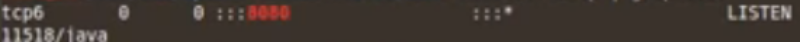

Installing Tomcat
We need three components to install Tomcet.
1. MySql JDBC Connector .
2. Tomcat Server 7.0.
3. Java JDK 7u8.
Installing Java JDK 7u8
1. Download jdk-7u80-linux-x64.tar.gz.
2. Extract the file on Desktop.
Installing MySql JDBC Connector
1. Download https://repo1.maven.org/maven2/mysql/mysql-connector-java/5.1.28/mysql-connector-java-5.1.28.jar
2. Extract the file on Desktop.
3. Copy it on ~/Desktop/jdk.1.7.0_80/jre/lib/ext
4. Move “jdk.1.7.0_80” folder to “/usr/share”. (You have to do it as “root”)
Installing Tomcat Server 7.0
1. Download https://ftp.cixug.es/apache/tomcat/tomcat-7/v7.0.108/bin/apache-tomcat-7.0.108.tar.gz.
2. Extract the file on Desktop.
3. Move ~/Desktop/apache-tomcat-7.0.108 to “/var/lib”. (You have to do it as “root”)
Configuring JAVA
Adding to the PATH.
In a shell type:
$PATH=/user/share/jdk1.7.0_80/bin:$PATH
$export PATH
$exho $PATH
$export PATH
$exho $PATH
You'll see the Java program is in the PATH.
Checking out Apache Tomcat
$cd /var/lib/apache-tomcat-7.0.108/bin
$./startup.sh
$./startup.sh
You'll see Apache Tomcat has started.
Now let's see whether or not is working.
$netstat -antp | grep 8080
Output:

It's working.
Go to your browser and type “localhost:8080”.
You'll see the main page of Apache Tomcat.
NOTE
This configuration is not safe for production. Don't use it.